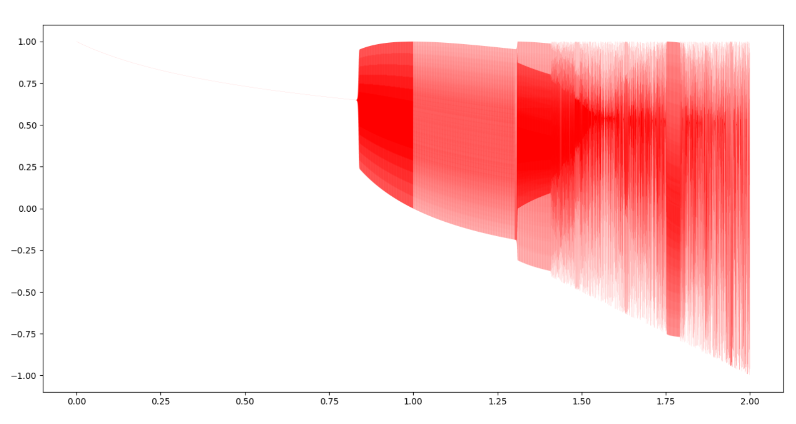

Logistic函数
2017-05-12
Logistic函数，即逻辑斯蒂函数，又称Sigmoid函数。最初来自于生态学模型，考虑细菌在培养基中的增殖，理想情况下，细菌增长速度正比细菌的数量，呈指数增长。
事实上，受营养物质、生长空间等因素的制约，对细菌增长产生一定的负效应，且该负效应正比于细菌数目，则细菌增长呈Logistic函数。 函数定义如下：
函数相关性质列举3点
1、生物中著名的虫口模型也即Logistic模型。
虫口模型：
虫口模型的python代码：
# coding:utf-8
from matplotlib import *
import matplotlib.pyplot as plt
import numpy as np
if __name__ == "__main__":
x= 0.5
y = []
for mu in np.arange(0,2,0.0001):
x = 1-mu *x *x
y.append(x)
X = [x for x in np.arange(0,2,0.0001)]
plt.plot(X, y, 'r',linewidth=0.05)
plt.show()
结果如下： 
Logistic函数处处可导，导数可以用自己表示。对Logistic求导,过程如下
2、我们进行如下考虑，当x发生的情况下Y=1和Y=0的概率：
则有：
对上式两边取对数
3、
sigmoid将数据区间从负无穷到正无穷映射到0/1之间，压缩掉头尾，扩展核心部分的权重。
对Logistic取反函数
当y在0和1时，对的影响非常大。
参考资料： 逻辑回归-雷军的博客 《机器学习算法原理与编程实践》